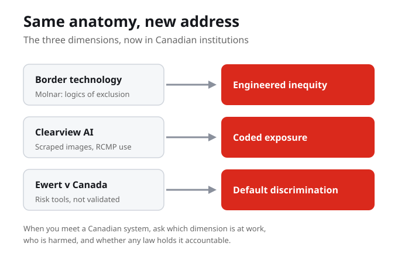
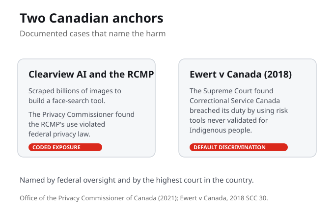

Same Anatomy, New Address
This week we bring the lens home. We have named the dimensions of the New Jim Code in the abstract. Now we watch them operate in Canada, in three domains: borders, policing, and the wider field of housing and services. The same logic runs through all three, and we take a documented Canadian case in each. Techno-racism is not somewhere else. It is here.
The New Jim Code is not an American problem we are studying from a distance. It runs at our borders, in our police services, and in our corrections, and this week it gets a Canadian address.
Where in your own Canadian life, your city, your program, your future field, do these systems already operate?
Three domains, one country
The same logic shows up across three Canadian domains, and we take a documented case in each. Borders: surveillance and exclusion at the line. Policing: prediction and facial recognition. Housing and services: sorting and screening. These are not separate stories. The logic you learned in the abstract runs through all three.
Borders, policing, and the wider field of housing and services are not three different problems. They are one mechanism wearing three uniforms, and each has a documented Canadian case behind it.

Borders: logics of exclusion
At the border, Petra Molnar studies digital border technologies: surveillance, biometrics, and automated decisions used at the line. They work through what she calls logics of exclusion. Migrants and refugees, with the least power to refuse, become the testing ground for tools that are later used more widely on everyone else.
Molnar calls the border a testing ground because migrants and refugees have the least power to refuse. Tools are tried on them first, then pushed outward. The harm is engineered into where the technology lands.
Molnar calls border technology a testing ground. Who is it tested on, and why there first?
Policing: prediction and recognition
In policing, Robertson, Khoo, and Song document algorithmic policing across Canada: predictive policing, facial recognition, and social-media surveillance. Shawn Singh notes that much of it has been authorized through court rulings, not clear legislation. The result is powerful tools with thin oversight.
When a tool is authorized by a court ruling instead of debated legislation, no one ever sat down and wrote the rules. That gap between the technology and the law is where the harm collects.

Case one: the RCMP and Clearview AI
Clearview AI scraped billions of images from the web to build a face-search tool. The RCMP used it for facial recognition. The Office of the Privacy Commissioner of Canada found that this use violated federal privacy law. People who never agreed to be in a police database were searchable in one anyway. That is coded exposure: made visible to a system that was never meant to see you.
Clearview AI scraped billions of images, the RCMP used it, and the Privacy Commissioner found that use unlawful. Federal oversight has already named this harm by name.
Which dimension, engineered inequity, default discrimination, or coded exposure, do you see first in the RCMP's use of Clearview AI?
Case two: Ewert v Canada (2018)
Jeffrey Ewert, a Metis man, challenged the risk-assessment tools used on him in federal prison. Correctional Service Canada relied on actuarial risk tools that had never been shown to be valid for Indigenous people. In 2018 the Supreme Court of Canada found that Correctional Service Canada breached its statutory duty. That is default discrimination, named by the highest court in the country.
No one needed to intend harm. The tool was simply never tested on Indigenous people and used anyway. The Supreme Court called that a breach of duty, which is what default discrimination looks like in law.
In Ewert v Canada, why did it matter that the risk tools were not validated for Indigenous offenders, and which dimension is that?
The dimensions, in Canadian systems
These cases are not new dimensions. They are the ones you already know, operating here. Border technology is engineered inequity. The risk tools in Ewert are default discrimination. The RCMP's use of Clearview AI is coded exposure. Same anatomy, new address.
You do not need a new vocabulary for Canada. Engineered inequity, default discrimination, and coded exposure are already enough to read every one of these cases. Same anatomy, new address.
The oversight gap
Across these cases, one pattern repeats: the technology arrived faster than the law. Tools were deployed quickly and at scale, often authorized by court rulings, used before any review, and challenged only after the harm was done. Oversight arrives late, case by case. That lag is not an accident, it is the space where the harm operates.
The technology is deployed at scale and the oversight arrives late, case by case. By the time a court or a commissioner names the harm, people have already lived through it.
Singh notes much algorithmic policing is authorized by courts, not legislation. Why does that gap matter?
How to spot it in Canada
So here is your method for any Canadian system you meet this week. Ask three questions. Which dimension is at work: engineered inequity, default discrimination, or coded exposure? Who is harmed, and is it a racialized or Indigenous community in particular? And is there any law, court ruling, or oversight body actually holding it accountable? Those three questions turn a headline into an analysis.
Dimension, harm, accountability. Those three questions are portable. They work on Clearview, on Ewert, and on the next Canadian system you have not heard of yet.
Your turn: map the Canadian case
This week you do not just read about Canadian cases, you walk one. You will step into a documented Canadian deployment, follow the decisions a real institution faced, and surface where the harm lands and where the accountability gap opens. Predict which dimension is at work, walk the case, see what the choices produce, then name it with the reading.
Naming where these systems already operate is the first move toward holding them accountable. This week you practise that naming on a real Canadian case.
What You Are Learning This Week
The New Jim Code Is Already Here
These systems are not in some other country. They run at Canadian borders, in Canadian police services, and in Canadian corrections. Naming where they already operate is the first move toward holding them accountable.
Two Anchors Name the Harm
The Privacy Commissioner found that the RCMP's use of Clearview AI violated federal privacy law, and in Ewert v Canada the Supreme Court found Correctional Service Canada breached its duty by using risk tools never validated for Indigenous people. Federal oversight and the highest court have both named it.
The Border Is a Testing Ground
Molnar describes digital border technologies that work through logics of exclusion. Migrants and refugees, with the least power to refuse, are tested on first, before the tools are used more widely.
The Oversight Gap Is Where Harm Lives
Robertson, Khoo, and Song document algorithmic policing across Canada, and Singh notes much of it is authorized through court rulings rather than clear legislation. The technology arrives faster than the law, and that lag is where the harm collects.